6. Verificação com as listas
Autor: Victor Andreozzi de La Rocque Couto · Revisor: Felipe Lopes Pedroza
Entrega: 3, Princípios Gerais de Projeto, Metas de Usabilidade e Guia de Estilo (parte individual, feita em 27/11/2026 para a funcionalidade de Victor, a partir do que ele entregou nas Entregas 4 a 7) · Funcionalidade de Victor no projeto: Avaliação de Disciplinas
Outros artefatos desta parte: 1. Visão geral e planejamento · 2. Características da plataforma · 3. Princípios gerais de projeto · 4. Metas de usabilidade · 5. Guia de estilo da Avaliação de Disciplinas
1. Introdução
A lista de verificação geral do grupo não tem itens da Entrega 3. Por isso, esta página aplica aos artefatos desta parte as quatro listas da Entrega 3 elaboradas por Matheus, com 42 itens, e depois os itens 10 a 17 da lista da Entrega 3 sugerida no plano de ensino. Cada resposta é Conforme, Não conforme ou Não se aplica. Clique em um item para ver o exemplo, a referência com a foto da página do livro e o link para o item na lista do grupo.
2. Características da plataforma
Artefato verificado: 2. Características da plataforma.
Item 1A descrição identifica a categoria da plataforma (por exemplo, janelas em desktop, toque em dispositivo móvel, voz por telefone), já que as diretrizes de interface podem ser específicas a essa categoria?ConformeEvidência: 2. Características da plataforma, Tabela 4, linha “Categoria da plataforma”
Exemplo: Interfaces de toque para dispositivos móveis; interfaces gráficas baseadas em janelas para computadores desktop.
Referência: Página 108 (página 114 do PDF), Capítulo 4 – Processos de Design de IHC, 4.3.2 Engenharia de Usabilidade de Nielsen. BARBOSA; SILVA (2010). Arquivo: INTERACAO_HUMANO_COMPUTADOR.pdf
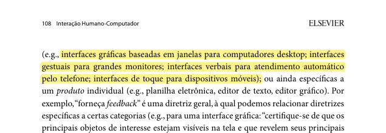
Item 2Quando o sistema é Web, a descrição traz as diretrizes próprias desse tipo de sistema, como a de orientar o usuário sobre onde está, de onde veio e para onde pode ir?ConformeEvidência: Indicador de etapas e trilha de navegação (Tabela 4)
Exemplo: Certifique-se de que o usuário sabe onde ele está, de onde veio e para onde pode ir.
Referência: Página 108 (página 114 do PDF), Capítulo 4 – Processos de Design de IHC, 4.3.2 Engenharia de Usabilidade de Nielsen. BARBOSA; SILVA (2010). Arquivo: INTERACAO_HUMANO_COMPUTADOR.pdf
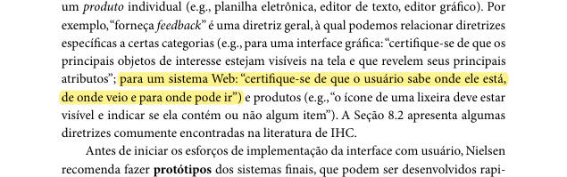
Item 3A descrição registra os dispositivos de uso e as restrições que cada um impõe à entrada e à saída de dados (digitação, manipulação do cursor, tamanho da tela)?ConformeEvidência: Linha “Dispositivos” da Tabela 4
Exemplo: Smartphone: digitação menos eficiente que teclado e mouse de desktop; a tela limita a quantidade de informação disponível a cada instante.
Referência: Página 20 (página 27 do PDF), Capítulo 2 – Conceitos Básicos, 2.1 Interface, Interação e Affordance. BARBOSA; SILVA (2010). Arquivo: INTERACAO_HUMANO_COMPUTADOR.pdf
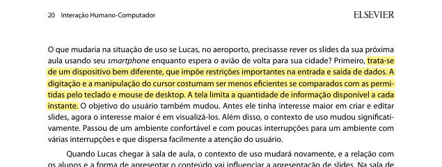
Item 4A descrição considera o contexto de uso da plataforma, isto é, quando o sistema é usado e em que ambiente físico, social e cultural a interação ocorre?ConformeEvidência: Linha “Contexto de uso” da Tabela 4
Exemplo: Momento de uso (quando): na véspera de um prazo; ambiente (onde): em casa, em sala de aula, em deslocamento.
Referência: Página 18 (página 25 do PDF), Capítulo 2 – Conceitos Básicos, 2.1 Interface, Interação e Affordance. BARBOSA; SILVA (2010). Arquivo: INTERACAO_HUMANO_COMPUTADOR.pdf
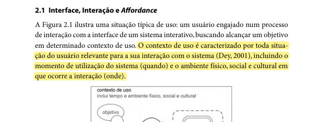
Item 5A descrição indica que as possibilidades e as limitações da plataforma em que o sistema será executado são insumo para definir as metas de usabilidade?ConformeEvidência: Parágrafo final de 2. Características da plataforma liga plataforma e metas
Exemplo: Meta de eficiência definida levando em conta o que a plataforma (dispositivo e navegador) permite e restringe.
Referência: Página 109 (página 115 do PDF), Capítulo 4 – Processos de Design de IHC, 4.3.3 Engenharia de Usabilidade de Mayhew. BARBOSA; SILVA (2010). Arquivo: INTERACAO_HUMANO_COMPUTADOR.pdf
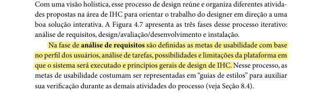
Item 6A descrição apresenta, além das limitações, as possibilidades da tecnologia disponível que o projeto pode explorar em favor dos usuários?ConformeEvidência: Linha “Possibilidades da tecnologia” da Tabela 4
Exemplo: Caixa eletrônico que funciona 24 horas por dia, em vez de depender do atendimento de um funcionário em horário comercial.
Referência: Página 114 (página 120 do PDF), Capítulo 4 – Processos de Design de IHC, 4.3.6 Design Dirigido por Objetivos. BARBOSA; SILVA (2010). Arquivo: INTERACAO_HUMANO_COMPUTADOR.pdf
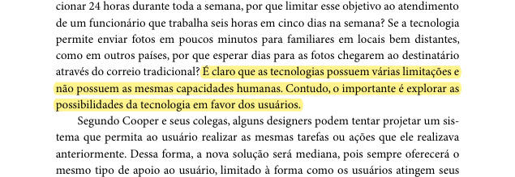
Item 7A descrição considera limitações do dispositivo utilizado (como exibição de cores) e prevê dicas secundárias para que a informação não dependa só da cor?ConformeEvidência: Linha “Cores e exibição” da Tabela 4
Exemplo: Variações na escala de cinza, ilustrações ou rótulos associados a cada cor apresentada.
Referência: Página 277 (página 282 do PDF), Capítulo 8 – Princípios e Diretrizes para o Design de IHC, 8.2.8 Conteúdo Relevante e Expressão Adequada. BARBOSA; SILVA (2010). Arquivo: INTERACAO_HUMANO_COMPUTADOR.pdf
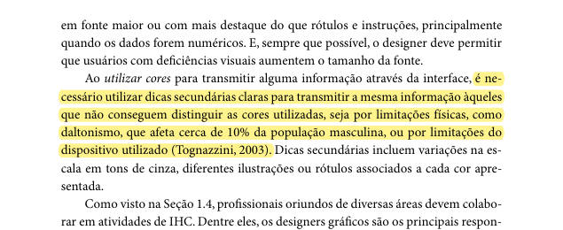
Item 8A descrição registra a frequência de uso do sistema e dela deriva a necessidade de apoio à recordação (pistas sobre como usar quando o uso é espaçado)?ConformeEvidência: Linha “Frequência de uso” da Tabela 4
Exemplo: Efetuar a matrícula numa universidade, a cada seis meses.
Referência: Página 30 (página 37 do PDF), Capítulo 2 – Conceitos Básicos, 2.2.1 Usabilidade e Experiência de Usuário. BARBOSA; SILVA (2010). Arquivo: INTERACAO_HUMANO_COMPUTADOR.pdf
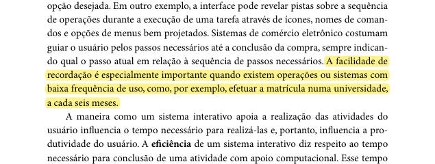
Item 9A descrição aponta as convenções da plataforma ou do ambiente computacional que a interface deve seguir?ConformeEvidência: Linha “Convenções da plataforma” da Tabela 4
Exemplo: Seguir as convenções do navegador e do sistema operacional usados pelo público.
Referência: Página 270 (página 275 do PDF), Capítulo 8 – Princípios e Diretrizes para o Design de IHC, 8.2.4 Consistência e Padronização. BARBOSA; SILVA (2010). Arquivo: INTERACAO_HUMANO_COMPUTADOR.pdf
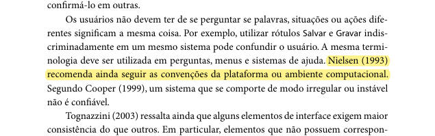
Item 10Cada implicação para o projeto fica rastreável ao que a análise mostrou, de modo que a decisão e sua origem (design rationale) não se percam?ConformeEvidência: Coluna “Origem” da Tabela 4
Exemplo: Decisão de projeto ligada ao achado da pesquisa com usuários que a motivou.
Referência: Página 283 (página 288 do PDF), Capítulo 8 – Princípios e Diretrizes para o Design de IHC, 8.4 Guias de Estilo. BARBOSA; SILVA (2010). Arquivo: INTERACAO_HUMANO_COMPUTADOR.pdf

3. Princípios gerais de projeto
Artefato verificado: 3. Princípios gerais de projeto.
Item 1A seção distingue princípio, diretriz e padrão, deixando claro que os itens adotados são objetivos gerais e de alto nível (princípios), e não regras específicas ou soluções pontuais?ConformeEvidência: 3. Princípios gerais de projeto, seção 1
Exemplo: Princípios: objetivos gerais e de alto nível; diretrizes: regras gerais comumente observadas na prática; padrões: soluções específicas a contextos bem delimitados.
Referência: Página 264 (página 269 do PDF), Capítulo 8 – Princípios e Diretrizes para o Design de IHC, 8.1 Introdução. BARBOSA; SILVA (2010). Arquivo: INTERACAO_HUMANO_COMPUTADOR.pdf
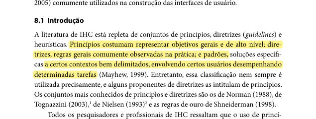
Item 2A seção declara que o uso de princípios e diretrizes não substitui as atividades de análise, design e avaliação?ConformeEvidência: Último parágrafo de 3. Princípios gerais de projeto
Exemplo: Os princípios orientam o design, mas não dispensam entender o problema, elaborar soluções candidatas e avaliá-las.
Referência: Página 264 (página 269 do PDF), Capítulo 8 – Princípios e Diretrizes para o Design de IHC, 8.1 Introdução. BARBOSA; SILVA (2010). Arquivo: INTERACAO_HUMANO_COMPUTADOR.pdf
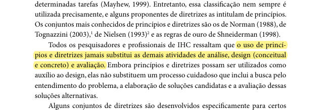
Item 3A seção deixa explícito que os princípios foram escolhidos e adaptados pelo grupo à sua situação de design, em vez de aplicados de forma genérica e descontextualizada?ConformeEvidência: Coluna “Decisão de projeto” da Tabela 5, específica da funcionalidade
Exemplo: O grupo justifica por que adota cada princípio e como ele aparece na solução, considerando domínio, usuários e atividades.
Referência: Página 264 (página 269 do PDF), Capítulo 8 – Princípios e Diretrizes para o Design de IHC, 8.1 Introdução. BARBOSA; SILVA (2010). Arquivo: INTERACAO_HUMANO_COMPUTADOR.pdf
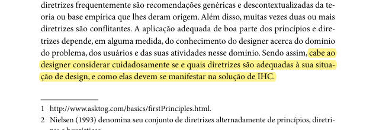
Item 4Os princípios adotados cobrem os nove tópicos da Seção 8.2 do livro (correspondência com as expectativas, simplicidade, controle e liberdade, consistência, eficiência, antecipação, visibilidade, conteúdo e expressão, projeto para erros), sem omitir nenhum?ConformeEvidência: Os nove tópicos na Tabela 5
Exemplo: Uma linha da tabela para cada um dos nove tópicos, com o nome do tópico e a seção do livro.
Referência: Página 265 (página 270 do PDF), Capítulo 8 – Princípios e Diretrizes para o Design de IHC, 8.2 Princípios e Diretrizes Gerais. BARBOSA; SILVA (2010). Arquivo: INTERACAO_HUMANO_COMPUTADOR.pdf
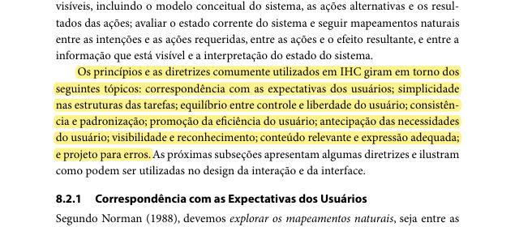
Item 5Cada princípio vem acompanhado de uma decisão concreta de projeto, mostrando como ele será usado no design da interação e da interface?ConformeEvidência: Coluna “Decisão de projeto” da Tabela 5
Exemplo: Princípio de consistência: usar o mesmo rótulo e a mesma representação para a mesma ideia em todas as telas.
Referência: Página 265 (página 270 do PDF), Capítulo 8 – Princípios e Diretrizes para o Design de IHC, 8.2 Princípios e Diretrizes Gerais. BARBOSA; SILVA (2010). Arquivo: INTERACAO_HUMANO_COMPUTADOR.pdf
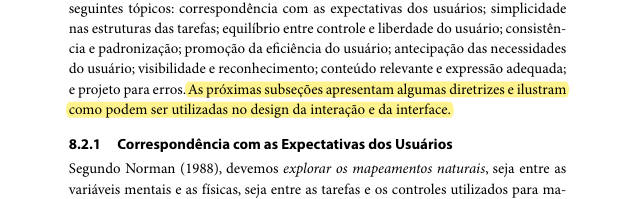
Item 6Cada decisão de projeto indica a origem que a motivou (design rationale), permitindo rastrear a decisão até os elementos da análise anterior que levaram a ela?ConformeEvidência: Coluna “Origem” da Tabela 5
Exemplo: Coluna "Origem" ligando a decisão a cenários, tarefas ou achados da etapa de análise.
Referência: Página 283 (página 288 do PDF), Capítulo 8 – Princípios e Diretrizes para o Design de IHC, 8.4 Guias de Estilo. BARBOSA; SILVA (2010). Arquivo: INTERACAO_HUMANO_COMPUTADOR.pdf

Item 7A seção prevê que os princípios e as decisões adotados sejam registrados em um guia de estilo, para que as decisões não se percam e cheguem ao produto final?ConformeEvidência: Remissão ao guia de estilo em 3. Princípios gerais de projeto, seção 2
Exemplo: Remissão da seção de princípios para o guia de estilo onde as decisões ficam registradas.
Referência: Página 282 (página 287 do PDF), Capítulo 8 – Princípios e Diretrizes para o Design de IHC, 8.4 Guias de Estilo. BARBOSA; SILVA (2010). Arquivo: INTERACAO_HUMANO_COMPUTADOR.pdf
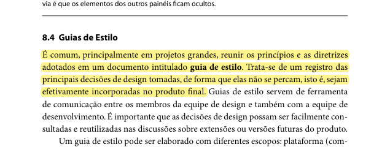
Item 8As diretrizes de legibilidade do texto estão presentes, isto é, alto contraste (texto preto sobre fundo branco ou amarelo-claro, evitando fundo cinza) e tamanho de fonte suficientemente grande?ConformeEvidência: Parágrafo sobre legibilidade, com as razões de contraste
Exemplo: Texto escuro sobre fundo claro, com fonte de tamanho legível em monitores de tamanho e resolução padrão.
Referência: Página 276 (página 281 do PDF), Capítulo 8 – Princípios e Diretrizes para o Design de IHC, 8.2.8 Conteúdo Relevante e Expressão Adequada. BARBOSA; SILVA (2010). Arquivo: INTERACAO_HUMANO_COMPUTADOR.pdf
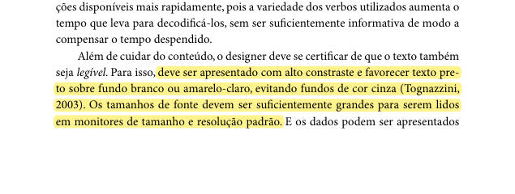
Item 9Quando a cor transmite informação, a seção exige dicas secundárias (tons de cinza, ilustrações ou rótulos) para quem não distingue as cores?ConformeEvidência: Parágrafo sobre cor com rótulo ou ícone
Exemplo: Estado indicado por cor e também por ícone e rótulo de texto.
Referência: Página 277 (página 282 do PDF), Capítulo 8 – Princípios e Diretrizes para o Design de IHC, 8.2.8 Conteúdo Relevante e Expressão Adequada. BARBOSA; SILVA (2010). Arquivo: INTERACAO_HUMANO_COMPUTADOR.pdf

Item 10A decisão de projeto para erros prevê mensagens em linguagem simples, que indiquem o problema com precisão e sugiram uma solução de forma construtiva?ConformeEvidência: Linha “Projeto para erros” da Tabela 5
Exemplo: Mensagem de erro que informa a causa provável e a ação corretiva, sem códigos indecifráveis.
Referência: Página 278 (página 283 do PDF), Capítulo 8 – Princípios e Diretrizes para o Design de IHC, 8.2.9 Projeto para Erros. BARBOSA; SILVA (2010). Arquivo: INTERACAO_HUMANO_COMPUTADOR.pdf

4. Metas de usabilidade
Artefato verificado: 4. Metas de usabilidade.
Item 1Os fatores de qualidade de uso escolhidos como metas pertencem aos critérios de qualidade de uso descritos pelo livro (usabilidade, experiência do usuário, acessibilidade, comunicabilidade)?ConformeEvidência: Coluna “Fator de qualidade (critério)” da Tabela 6
Exemplo: Facilidade de aprendizado, eficiência e satisfação são fatores de usabilidade; acessibilidade e comunicabilidade são critérios à parte.
Referência: Página 28 (página 35 do PDF), Capítulo 2 – Conceitos Básicos, 2.2 Qualidade em IHC. BARBOSA; SILVA (2010). Arquivo: INTERACAO_HUMANO_COMPUTADOR.pdf
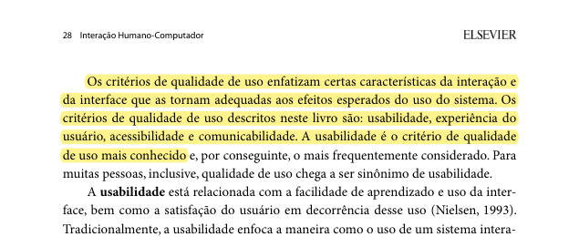
Item 2O artefato declara quais fatores de qualidade de uso serão priorizados no projeto e como cada um será avaliado ao longo do processo de design?ConformeEvidência: Prioridade na Tabela 6 e medição na Tabela 8
Exemplo: Uma lista de metas em que cada fator aparece com um grau de prioridade e uma forma de avaliação prevista.
Referência: Página 105 (página 111 do PDF), Capítulo 4 – Processos de Design de IHC, 4.3.2 Engenharia de Usabilidade de Nielsen. BARBOSA; SILVA (2010). Arquivo: INTERACAO_HUMANO_COMPUTADOR.pdf
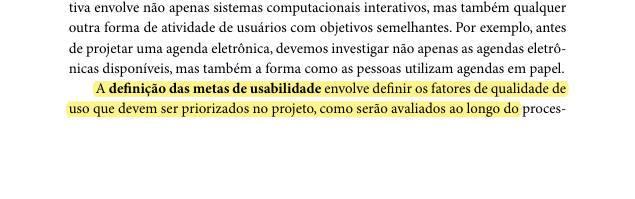
Item 3Para cada indicador de interesse, o artefato estabelece as faixas de valores inaceitáveis, aceitáveis e ideais?ConformeEvidência: Faixas inaceitável, aceitável e ideal na Tabela 6
Exemplo: Indicador: tempo para concluir a tarefa; faixas: inaceitável, aceitável e ideal, cada uma com seus valores.
Referência: Página 106 (página 112 do PDF), Capítulo 4 – Processos de Design de IHC, 4.3.2 Engenharia de Usabilidade de Nielsen. BARBOSA; SILVA (2010). Arquivo: INTERACAO_HUMANO_COMPUTADOR.pdf
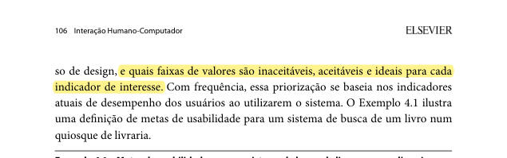
Item 4A priorização dos fatores justifica-se pelas necessidades dos usuários, reconhecendo que não é possível atingir todos os critérios ao mesmo tempo?ConformeEvidência: Seção 3 e Tabela 7
Exemplo: Um sistema com muitos atalhos é eficiente, mas os atalhos são mais difíceis de lembrar para usuários ocasionais.
Referência: Página 32 (página 39 do PDF), Capítulo 2 – Conceitos Básicos, 2.2.1 Usabilidade e Experiência de Usuário. BARBOSA; SILVA (2010). Arquivo: INTERACAO_HUMANO_COMPUTADOR.pdf
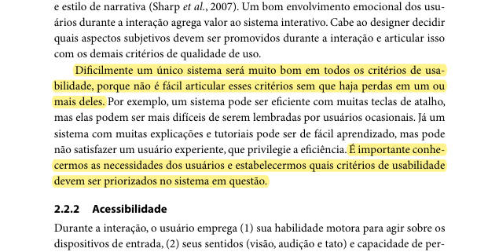
Item 5O artefato informa em que se baseiam as faixas de valores (indicadores atuais de desempenho ou dados quantitativos coletados) ou declara que essa base ainda não existe?ConformeEvidência: Parágrafo antes da Tabela 6 declara que não havia indicadores atuais
Exemplo: No livro, o quiosque de livraria em que 50% dos usuários desistem da busca serve de ponto de partida para as metas.
Referência: Página 106 (página 112 do PDF), Capítulo 4 – Processos de Design de IHC, 4.3.2 Engenharia de Usabilidade de Nielsen. BARBOSA; SILVA (2010). Arquivo: INTERACAO_HUMANO_COMPUTADOR.pdf
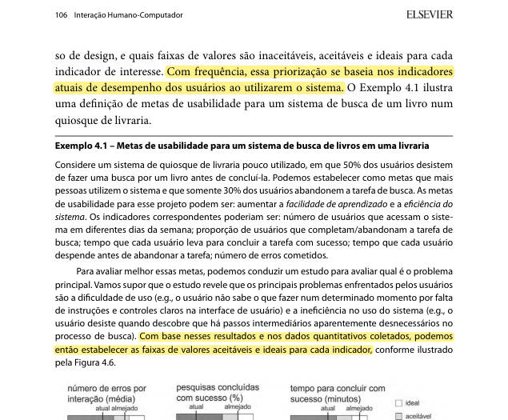
Item 6Cada meta está associada a um ou mais indicadores mensuráveis?ConformeEvidência: Coluna “Indicador” da Tabela 6
Exemplo: Proporção de usuários que completam ou abandonam a tarefa; tempo para concluir a tarefa com sucesso; número de erros.
Referência: Página 106 (página 112 do PDF), Capítulo 4 – Processos de Design de IHC, Exemplo 4.1 – Metas de usabilidade para um sistema de busca de livros em uma livraria (Seção 4.3.2). BARBOSA; SILVA (2010). Arquivo: INTERACAO_HUMANO_COMPUTADOR.pdf
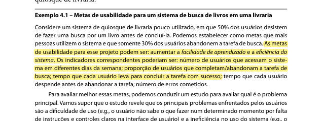
Item 7As metas foram definidas com base no perfil dos usuários, na análise de tarefas, nas possibilidades e limitações da plataforma e nos princípios gerais de design de IHC?ConformeEvidência: Coluna “Base” da Tabela 7
Exemplo: Origem de cada meta indicada: perfil de usuário, tarefa analisada, restrição da plataforma ou princípio de design.
Referência: Página 109 (página 115 do PDF), Capítulo 4 – Processos de Design de IHC, 4.3.3 Engenharia de Usabilidade de Mayhew. BARBOSA; SILVA (2010). Arquivo: INTERACAO_HUMANO_COMPUTADOR.pdf

Item 8O artefato prevê que as metas serão verificadas a cada iteração de design e avaliação, até serem alcançadas?ConformeEvidência: Seção 4 e Tabela 8
Exemplo: Medir os indicadores a cada nova versão do protótipo e repetir o ciclo enquanto a meta não for atingida.
Referência: Página 109 (página 115 do PDF), Capítulo 4 – Processos de Design de IHC, 4.3.2 Engenharia de Usabilidade de Nielsen. BARBOSA; SILVA (2010). Arquivo: INTERACAO_HUMANO_COMPUTADOR.pdf
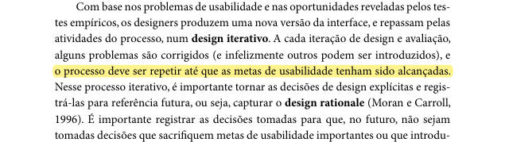
Item 9Quando a facilidade de aprendizado é uma meta, ela é tratada em termos de tempo e esforço para o usuário atingir determinado nível de competência e desempenho?ConformeEvidência: Meta 5 e parágrafo após a Tabela 6
Exemplo: Quanto tempo um usuário leva para aprender a realizar as atividades principais.
Referência: Página 29 (página 36 do PDF), Capítulo 2 – Conceitos Básicos, 2.2.1 Usabilidade e Experiência de Usuário. BARBOSA; SILVA (2010). Arquivo: INTERACAO_HUMANO_COMPUTADOR.pdf
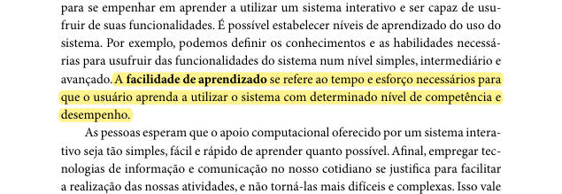
Item 10Quando acessibilidade e comunicabilidade são consideradas metas, o artefato as trata como critérios de qualidade de uso próprios (remoção de barreiras de acesso e comunicação ao usuário da lógica de design)?ConformeEvidência: Comunicabilidade como critério próprio na meta 4; acessibilidade tratada como diretriz do guia
Exemplo: Acessibilidade: remover barreiras que impedem mais usuários de acessar a interface; comunicabilidade: comunicar a lógica do design.
Referência: Página 28 (página 35 do PDF), Capítulo 2 – Conceitos Básicos, 2.2 Qualidade em IHC. BARBOSA; SILVA (2010). Arquivo: INTERACAO_HUMANO_COMPUTADOR.pdf
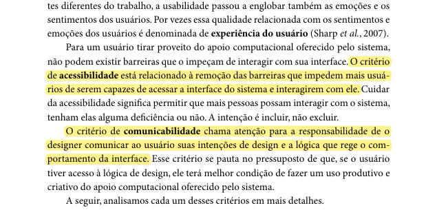
5. Guia de estilo
Artefato verificado: 5. Guia de estilo da Avaliação de Disciplinas.
Item 1O guia declara sua finalidade (registrar as decisões de design, servir de comunicação entre as equipes e permitir consulta e reuso em versões futuras) e o escopo a que se aplica (plataforma, corporativo, família de produtos ou produto específico)?ConformeEvidência: 5. Guia de estilo da Avaliação de Disciplinas, parágrafo inicial
Exemplo: O guia diz que registra as decisões de design e que vale para um produto específico.
Referência: Página 282 (página 287 do PDF), Capítulo 8 – Princípios e Diretrizes para o Design de IHC, 8.4 Guias de Estilo. BARBOSA; SILVA (2010). Arquivo: INTERACAO_HUMANO_COMPUTADOR.pdf
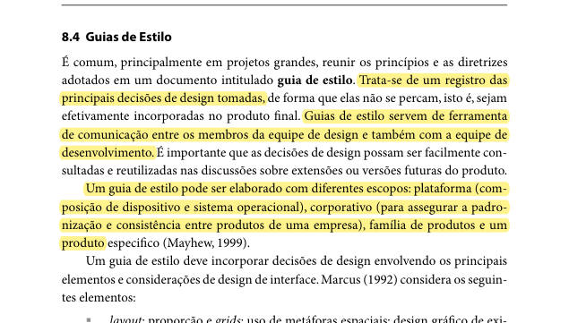
Item 2A introdução do guia apresenta o objetivo, a organização e o conteúdo, o público-alvo, como utilizar o guia e como mantê-lo?ConformeEvidência: Seção 1 do guia
Exemplo: Seção de introdução com objetivo, público (programadores, gerentes, equipe de suporte), modo de uso e rotina de manutenção.
Referência: Página 283 (página 288 do PDF), Capítulo 8 – Princípios e Diretrizes para o Design de IHC, 8.4 Guias de Estilo. BARBOSA; SILVA (2010). Arquivo: INTERACAO_HUMANO_COMPUTADOR.pdf
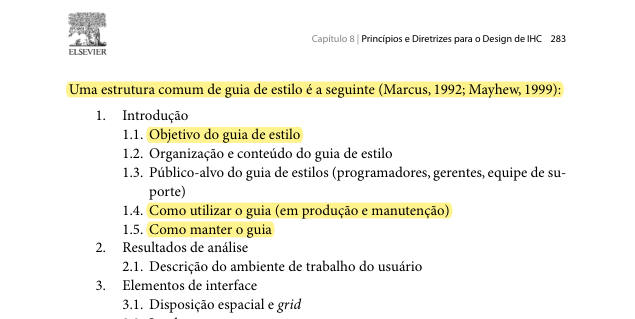
Item 3O guia inclui os resultados da análise (levantamento de dados e necessidades dos usuários e descrição do ambiente de trabalho do usuário) que embasam as decisões?ConformeEvidência: Seção 2 do guia
Exemplo: Resumo dos perfis de usuário e do ambiente de uso, anterior às decisões de interface.
Referência: Página 283 (página 288 do PDF), Capítulo 8 – Princípios e Diretrizes para o Design de IHC, 8.4 Guias de Estilo. BARBOSA; SILVA (2010). Arquivo: INTERACAO_HUMANO_COMPUTADOR.pdf
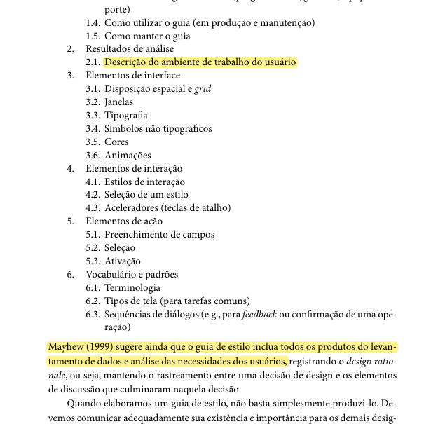
Item 4O guia registra o design rationale, isto é, mantém o rastreamento entre cada decisão de design e os elementos de discussão que levaram a ela?ConformeEvidência: Coluna “Origem” e origens entre parênteses
Exemplo: Cada decisão traz a indicação da tarefa, do cenário ou do achado de análise que a originou.
Referência: Página 283 (página 288 do PDF), Capítulo 8 – Princípios e Diretrizes para o Design de IHC, 8.4 Guias de Estilo. BARBOSA; SILVA (2010). Arquivo: INTERACAO_HUMANO_COMPUTADOR.pdf
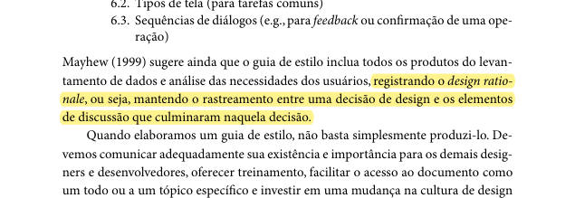
Item 5O guia trata as cores com dicas secundárias (tons de cinza, ilustrações ou rótulos) para que a informação transmitida por cor chegue também a quem não distingue as cores?ConformeEvidência: Tabela 9 e regra de não depender só da cor
Exemplo: Estado indicado por cor, ícone e texto, e não só pela cor.
Referência: Página 277 (página 282 do PDF), Capítulo 8 – Princípios e Diretrizes para o Design de IHC, 8.2.8 Conteúdo Relevante e Expressão Adequada. BARBOSA; SILVA (2010). Arquivo: INTERACAO_HUMANO_COMPUTADOR.pdf
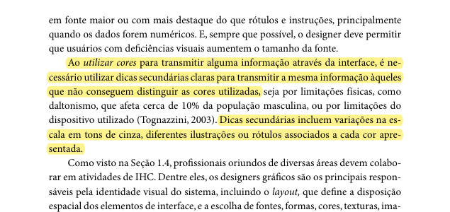
Item 6O guia define a tipografia com atenção à legibilidade, como dados em fonte maior ou com mais destaque que rótulos e instruções, e a possibilidade de o usuário aumentar o tamanho da fonte?ConformeEvidência: Seção 3.2 do guia
Exemplo: Regra de tamanho mínimo de fonte e de destaque para dados numéricos.
Referência: Página 277 (página 282 do PDF), Capítulo 8 – Princípios e Diretrizes para o Design de IHC, 8.2.8 Conteúdo Relevante e Expressão Adequada. BARBOSA; SILVA (2010). Arquivo: INTERACAO_HUMANO_COMPUTADOR.pdf
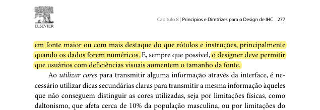
Item 7O guia especifica o layout (proporção, grid e uso do espaço) e os símbolos não tipográficos (ícones) com clareza e consistência?ConformeEvidência: Seção 3.3 do guia
Exemplo: Grid de colunas e margens; um único conjunto de ícones, cada um com um só significado.
Referência: Página 282 (página 287 do PDF), Capítulo 8 – Princípios e Diretrizes para o Design de IHC, 8.4 Guias de Estilo. BARBOSA; SILVA (2010). Arquivo: INTERACAO_HUMANO_COMPUTADOR.pdf
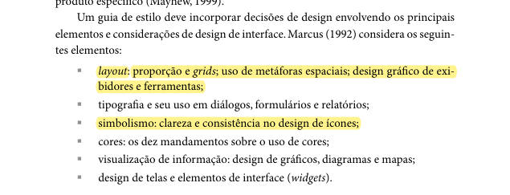
Item 8O guia define os elementos de interação e de ação, como estilos de interação, aceleradores, preenchimento de campos, seleção e ativação?ConformeEvidência: Seções 4 e 5 do guia (Tabela 10)
Exemplo: Quadro de padrões: como selecionar, como ativar uma ação, quais teclas de atalho existem.
Referência: Página 283 (página 288 do PDF), Capítulo 8 – Princípios e Diretrizes para o Design de IHC, 8.4 Guias de Estilo. BARBOSA; SILVA (2010). Arquivo: INTERACAO_HUMANO_COMPUTADOR.pdf
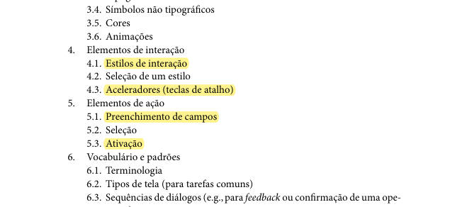
Item 9O guia define o vocabulário e os padrões de diálogo, isto é, a terminologia, os tipos de tela para tarefas comuns e as sequências de diálogos (por exemplo, de feedback ou de confirmação de uma operação)?ConformeEvidência: Seção 6 do guia (Tabela 11)
Exemplo: Glossário de termos padronizados e sequência de confirmação antes de uma operação irreversível.
Referência: Página 283 (página 288 do PDF), Capítulo 8 – Princípios e Diretrizes para o Design de IHC, 8.4 Guias de Estilo. BARBOSA; SILVA (2010). Arquivo: INTERACAO_HUMANO_COMPUTADOR.pdf
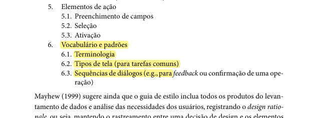
Item 10O guia se apresenta como ferramenta de apoio ao trabalho e à criatividade, usada em um processo reflexivo de design, e não como um conjunto de regras ou de soluções prontas?ConformeEvidência: Item “Como utilizar” da seção 1
Exemplo: Texto que convida a consultar o guia e a justificar desvios, em vez de impô-lo como norma.
Referência: Página 284 (página 289 do PDF), Capítulo 8 – Princípios e Diretrizes para o Design de IHC, 8.4 Guias de Estilo. BARBOSA; SILVA (2010). Arquivo: INTERACAO_HUMANO_COMPUTADOR.pdf
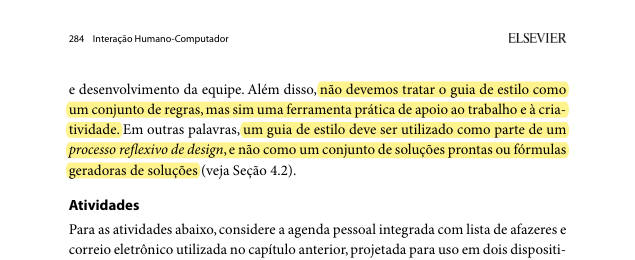
Item 11O guia define a legibilidade do texto, com alto contraste entre texto e fundo, preferência por texto escuro sobre fundo claro e tamanhos de fonte suficientemente grandes?ConformeEvidência: Tabela 9, com a razão de contraste de cada par
Exemplo: Paleta com razão de contraste indicada para cada par de texto e fundo.
Referência: Página 276 (página 281 do PDF), Capítulo 8 – Princípios e Diretrizes para o Design de IHC, 8.2.8 Conteúdo Relevante e Expressão Adequada. BARBOSA; SILVA (2010). Arquivo: INTERACAO_HUMANO_COMPUTADOR.pdf
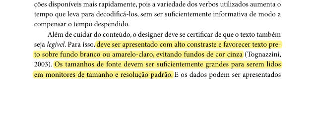
Item 12O guia padroniza as mensagens de erro, em linguagem simples e sem códigos indecifráveis, indicando precisamente o problema e sugerindo uma solução de forma construtiva?ConformeEvidência: Linha “Mensagens de erro” da Tabela 11
Exemplo: Mensagem que diz o que aconteceu e o que o usuário pode fazer em seguida.
Referência: Página 278 (página 283 do PDF), Capítulo 8 – Princípios e Diretrizes para o Design de IHC, 8.2.9 Projeto para Erros. BARBOSA; SILVA (2010). Arquivo: INTERACAO_HUMANO_COMPUTADOR.pdf
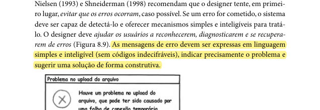
Os 42 itens das quatro listas estão conformes.
6. Lista de verificação do plano de ensino
| Item | Pergunta | Resposta | Evidência |
|---|---|---|---|
| 10 | As características da plataforma para o projeto? | Sim | 2. Características da plataforma, Tabela 4 |
| 11 | Os princípios gerais do projeto que serão utilizados, com referência e foto? | Sim | 3. Princípios gerais de projeto, Figuras 5 e 6 e Tabela 5 |
| 12 | Os princípios contêm os tópicos pedidos, com referência e foto? | Sim | 3. Princípios gerais de projeto, Tabela 5 (nove tópicos do livro, que incluem os oito do plano) |
| 13 | As metas de usabilidade, com referência e foto? | Sim | 4. Metas de usabilidade, Figuras 7 a 9 e Tabela 6 |
| 14 | A razão da seleção das metas de usabilidade? | Sim | 4. Metas de usabilidade, Tabela 7 |
| 15 | O guia de estilo do projeto, com referência e foto? | Sim | 5. Guia de estilo da Avaliação de Disciplinas, Figuras 10 e 11 |
| 16 | O guia de estilo tem a estrutura pedida, com referência e foto? | Sim | 5. Guia de estilo da Avaliação de Disciplinas, seções 1 a 6 |
| 17 | O guia de estilo corresponde ao site avaliado? | Sim | 5. Guia de estilo da Avaliação de Disciplinas, seção 7 e Tabela 12 (correspondência parcial no tema claro, registrada) |
Fonte: Victor Andreozzi de La Rocque Couto (2026), a partir da lista de verificação da Entrega 3 sugerida no plano de ensino.
7. Referências
- LAMEIRA, Matheus do Vale. Listas de verificação da Entrega 3: princípios gerais de projeto, características da plataforma, metas de usabilidade e guia de estilo. Universidade de Brasília, 2026. Disponíveis em: princípios, plataforma, metas e guia.
- BARBOSA, Simone Diniz Junqueira; SILVA, Bruno Santana da. Interação Humano-Computador. Rio de Janeiro: Elsevier, 2010.
Histórico de versão
| Versão | Data | Descrição | Autor(es) | Revisor(es) | Declaração de ferramenta de IA |
|---|---|---|---|---|---|
| 1.0 | 27/11/2026 | Parte individual da Entrega 3: aplicação das quatro listas de verificação do grupo (42 itens) e dos itens 10 a 17 da lista do plano de ensino | Victor Andreozzi de La Rocque Couto | Felipe Lopes Pedroza | Claude (Anthropic): organização das páginas, redação das tabelas a partir dos artefatos de Victor nas Entregas 4 a 7 e do protótipo de alta fidelidade, cálculo das razões de contraste e captura e grifo das páginas do livro; as decisões de projeto, as metas e as conclusões são do autor |